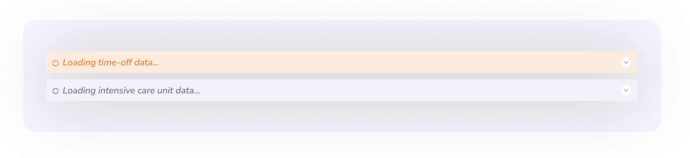

Design
Guide


Best Practices
- Changes are auto-saved within 700ms after user input stops or on focus out of the field.
- Once the save is triggered, the status changes to "Saving…" accompanied by a spinner or loading icon.
- After a successful save, it transitions to "Saved" with a cloud-check icon. The label disappears after 3 seconds, but the cloud-check icon remains visible until the next save is triggered
- In case of a failed save, a warning or error icon and failed label is shown along with a tooltip or inline message to indicate the issue.
If the content area is scrollable and a fixed header cannot be defined, auto-save should not be implemented.In such cases, manual save actions (with Save/Submit buttons) offer clearer control and feedback.
When a screen contains multiple sections or cards If a generic fixed header cannot be applied then each card should act as an independent unit. The header of the most recently interacted input will display the saving indicator based on the active field
Where to Use- Users enter complex or multi-step data (e.g., performance forms, vacancies)
- There’s a risk of accidental data loss (e.g., session timeout, navigation)
- Drafting or editing takes time
- Long forms with sections, weights, and questions
- Multiple steps with flow mapping
- Form builders with drag-drop interactions
- Quick Actions (e.g., Approvals/Rejections)- one click decisions where users expect an immediate effect.
- Short forms with a few fixed inputs, often visited by Admins infrequently, with minimal effort to re-enter if needed
In summary, auto-save should support long, error-prone, or multi-step tasks — not fast, decisive, or low-risk interactions.
Suitable scenarios:Reordering items,Assigning items to a container,Arranging visual structures
Best Practices
- Drag Handle: Use a consistent icon (e.g., ☰ or ⁝⁝) on the draggable item to indicate it's movable.
- Hover Effect: Change cursor to grab or grabbing on hover.
- Drop Zone Highlight: When dragging over a valid target, visually highlight the drop zone (represnt target zone with a blue line in forms/background color in other views)
- Placeholder: Show a placeholder in the drop area to indicate where the item will be inserted.
Collapsed View
In the collapsed view, only the section titles are shown. (The number of visible items within a collapsed row may vary depending on the context or design requirements.) Each section includes a chevron icon indicating expandability.
Expanded ViewIn the expanded state, full content is revealed for the selected section. The chevron icon rotates upward to visually indicate the expanded state.
Expand All/Collapse AllA button is provided to handle both “Expand All” and “Collapse All” actions. When all sections are expanded, the button label automatically updates to “Collapse All”.
Loader in Collapsed View When expanded section data takes time to load, a loader is shown within the collapsed view itself to proactively inform users that background loading is in progress
Modals should be triggered by clearly labeled buttons, links, or actions. Focus should automatically shift to the first focusable element inside the modal (input field, button).
Closing a ModalThe modal can be closed through multiple user-initiated actions,